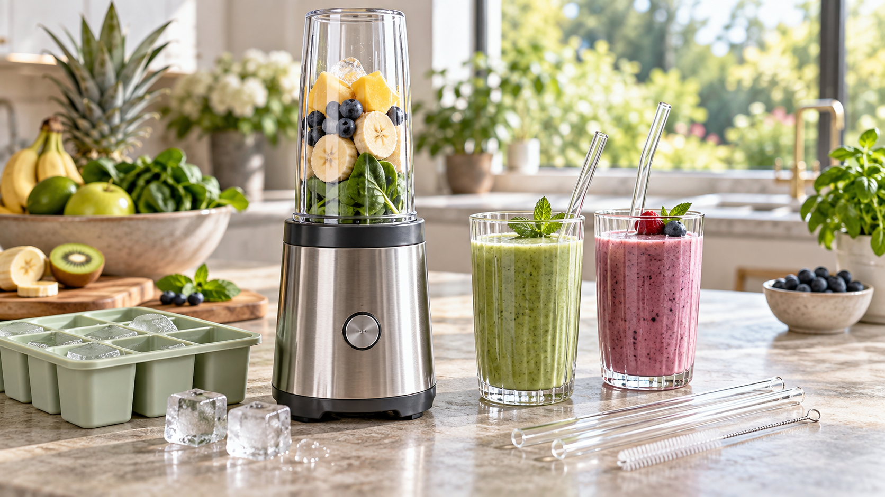

Alles für deine gesunde Küchenroutine
In meiner Amazon Storefront findest du Gläser, Mixer, Glasstrohhalme, Silikon-Eiswürfelformen und weiteres Zubehör für Smoothies, Drinks und Meal Prep.
Amazon Storefront →Affiliate-Link
Klassische Hühnersuppe mit Karotten, Lauch und Sellerie – einfach und passend für kühle Tage.
Unsere Gesundheit ist wichtig. Deshalb findest du hier nicht nur einfache Rezepte, sondern auch ausgewählte Partner und Empfehlungen, die zu einem bewussten Alltag passen.
Für uns haben Qualität, Einfachheit und Sicherheit Priorität. Deshalb stellen wir unter anderem Touchstone Essentials und Nature Heart vor und verlinken passendes Zubehör für Smoothies, Meal Prep und weitere Rezepte.

KIIn meiner Amazon Storefront findest du Gläser, Mixer, Glasstrohhalme, Silikon-Eiswürfelformen und weiteres Zubehör für Smoothies, Drinks und Meal Prep.
Amazon Storefront → KI
KIErgibt 4–6 Portionen.
Geflügel vollständig durchgaren. Reste rasch abkühlen lassen, gekühlt aufbewahren und beim erneuten Erwärmen gut durcherhitzen.